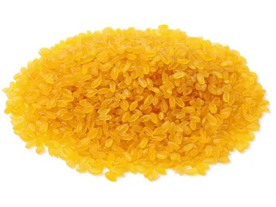
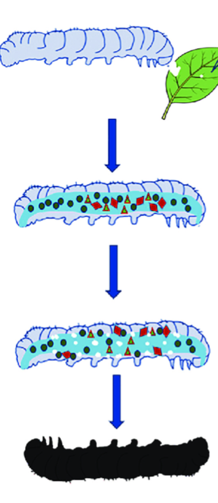

वर्तमान समय में जैव प्रौद्योगिकी का उपयोग अनेक महत्वपूर्ण क्षेत्रों में किया जा रहा है, जैसे—
जैव तकनीकी के उद्देश्य निम्न हैं—
वे जीव (पौधे, जंतु या सूक्ष्मजीव) जिनके जीनोम में पुनर्योगज DNA तकनीक द्वारा किसी अन्य जीव का इच्छित जीन प्रविष्ट कर दिया गया हो, उन्हें आनुवंशिकतः रूपांतरित जीव (GMO) कहते हैं। यह परिवर्तन स्थायी होता है और अगली पीढ़ियों में भी स्थानांतरित हो सकता है।
लाभ —
उपयोगिता —
आनुवंशिकतः रूपांतरित जीव या ट्रान्सजेनिक जीव (GMO) प्राप्त करने की प्रक्रिया ट्रान्सजेनिक्स कहलाती है।
GMO का पूरा नाम जेनेटिकली मॉडीफाइड ऑर्गेनिज्म है।
GMO संकर से भिन्न है क्योंकि एक संकर में पूरे जीनोम का ही क्रॉस होता है जबकि GMO में एक जीव में केवल कुछेक वांछित विजातीय जीन होती हैं।
आनुवंशिक रूप से रूपान्तरित (GM) फसलें वे फसलें हैं जिनके जीनों में जैव-प्रौद्योगिकी द्वारा परिवर्तन किया जाता है ताकि उनमें उच्च उपज, कीट-रोग प्रतिरोध या बेहतर गुणवत्ता जैसे गुण आ सकें।
इन फसलों को ट्रांसजेनेसिस विधि द्वारा पुनर्योगज DNA तकनीक की सहायता से तैयार किया जाता है।
उदाहरण: मक्का, सोर फ्लोर, टमाटर एवं रेपसीड ऑयल।
आनुवंशिक रूप से रूपान्तरित फसलों के लाभ निम्न हैं—
आनुवंशिक रूप से रूपान्तरित भोजन वह भोजन होता है, जो ऐसे पौधों या जंतुओं से प्राप्त किया जाता है जिनके जीनोम में जैव प्रौद्योगिकी की सहायता से इच्छित परिवर्तन किए गए हों।
इन परिवर्तनों के द्वारा भोजन में उत्पादन क्षमता, पोषण मूल्य, रोग/कीट प्रतिरोध या भंडारण क्षमता को बढ़ाया जाता है।
उदाहरण:
गोल्डन राइस एक आनुवंशिक रूप से परिवर्तित (GM) धान की किस्म है, जिसमें β-कैरोटीन (बीटा कैरोटीन) के उत्पादन हेतु आवश्यक जीन प्रविष्ट कराए गए हैं। β-कैरोटीन विटामिन-A का अग्रद्रव्य होता है, जो चावल के दानों को सुनहरा रंग देता है।

बच्चों में विटामिन-A की कमी से रात्रि अन्धता और स्थायी अन्धता हो सकती है। गोल्डन राइस खाने से शरीर में β-कैरोटीन विटामिन-A में परिवर्तित हो जाता है। इससे विटामिन-A की कमी दूर होती है और अन्धता की रोकथाम में सहायता मिलती है।
Bt फसलें वे आनुवंशिक रूप से परिवर्तित (GM) फसलें होती हैं, जिनमें Bacillus thuringiensis (Bt) नामक जीवाणु का क्राय (cry) जीन प्रविष्ट कराया जाता है। यह जीन कीट-नाशक प्रोटीन (Bt toxin) बनाता है, जो कुछ विशिष्ट कीटों को नष्ट कर देता है।
उदाहरण:
लाभ:
क्राई प्रोटीन्स वे कीटनाशक प्रोटीन होते हैं, जो कुछ विशिष्ट कीटों को मारने की क्षमता रखते हैं। ये प्रोटीन कीटों की आंत की कोशिकाओं को नष्ट कर देते हैं, जिससे कीट की मृत्यु हो जाती है।
उपयोग - Bt जीवाणु द्वारा उत्पन्न Cry प्रोटीन्स का उपयोग Bt फसलों (जैसे Bt कपास) में किया जाता है, जिससे फसलें कीट-प्रतिरोधी बनती हैं।
क्राई प्रोटीन्स उत्पन्न करने वाला जीव बैसिलस थुरिन्जिएन्सिस (Bt) है।
कई प्रोटीन तथा सूक्ष्मजीवों द्वारा उत्पन्न विष असक्रिय रूप में स्रावित किए जाते हैं ताकि वे उत्पादक जीव को स्वयं हानि न पहुँचाएँ। ये प्रोटीन/विष केवल विशिष्ट पर्यावरणीय परिस्थितियों जैसे उपयुक्त pH, तापमान या एंज़ाइमों की उपस्थिति में ही सक्रिय होते हैं।
उदाहरण के लिए, Bacillus thuringiensis द्वारा उत्पन्न Bt विष (Cry प्रोटीन) जीवाणु में असक्रिय रूप में पाया जाता है। यह विष कीट की आहार नाल की क्षारीय pH में जाकर ही सक्रिय होता है और कीट की आंत की कोशिकाओं को नष्ट कर देता है।

क्राई प्रोटीन (बीटी विष) को कोड करने वाली जीन को क्राई जीन कहा जाता है।
इसके निम्न प्रकार हैं—
(स्रोत नोट्स में इन जीनों के प्रभाव अगले प्रश्न में पृथक् रूप से दिए गए हैं।)
क्राई जीन IAc द्वारा कूटबद्ध जीव-विष कपास के मुकुल कृमि को नियंत्रित करता है।
क्राई जीन IAb द्वारा कूटबद्ध जीव-विष मक्का छेदक को नियंत्रित करता है।
ऊतक संवर्धन द्वारा हजारों की संख्या में पादपों को उत्पन्न किया जा सकता है। इनमें प्रत्येक पादप आनुवंशिक रूप से मूलपादप के समान होते हैं।
(नोट: स्रोत सामग्री में केवल एक ही लाभ का वर्णन मिलता है, जबकि प्रश्न में दो लाभ माँगे गए हैं — यह स्रोत की मूल कमी है, जिसे यथावत रखा गया है।)
वे जीवाणु जिनकी संरचना में वांछित परिवर्तन करके उनका उपयोग मानव कल्याण के लिए किया जाता है, पारजीनी जीवाणु कहलाते हैं।
जैसे मानव निर्मित इन्सुलिन का निर्माण आनुवांशिक रूप से रूपान्तरित जीवाणु ई. कोलाई द्वारा किया जाता है।
(नोट: प्रश्न में "सचित्र वर्णन" माँगा गया है, परन्तु स्रोत सामग्री में इस उत्तर के साथ कोई चित्र उपलब्ध नहीं है — यह स्रोत की मूल कमी है।)
उपयोग -
मानव इन्सुलिन का उत्पादन पुनःसंयोजक डीएनए तकनीक द्वारा किया जाता है। इसके मुख्य चरण निम्नलिखित हैं—
इस विधि से बना इन्सुलिन शुद्ध, सुरक्षित और मधुमेह के उपचार में अत्यंत प्रभावी होता है।
जीन चिकित्सा वह तकनीक है जिसमें किसी व्यक्ति की कोशिकाओं में दोषपूर्ण जीन को हटाकर उसके स्थान पर सामान्य (कार्यशील) जीन प्रविष्ट कराया जाता है, ताकि आनुवंशिक रोग का उपचार किया जा सके।
जैसे ADA की कमी के उपचार में जीन चिकित्सा पहली सफल आनुवंशिक चिकित्सा है।
ADA एक एंजाइम है जो प्रतिरक्षा तंत्र के सही विकास के लिए आवश्यक होता है।
ADA का पूरा नाम: एडीनोसिन डीएमिनेज
ADA की कमी से होने वाला रोग: ADA की कमी से टी-लिम्फोसाइट्स का विकास नहीं हो पाता, जिससे शरीर की प्रतिरक्षा शक्ति अत्यधिक कमजोर हो जाती है। इस रोग को SCID (Severe Combined Immunodeficiency) भी कहते हैं।
ADA की कमी में जीन चिकित्सा की प्रक्रिया निम्न है—
जीन चिकित्सा को मुख्यतः दो प्रकार में बाँटा जाता है—
इसमें रोगी की दैहिक कोशिकाओं (जैसे रक्त या अस्थि-मज्जा कोशिकाएँ) में सामान्य जीन प्रविष्ट कराया जाता है। इसका प्रभाव केवल उसी व्यक्ति तक सीमित रहता है, अगली पीढ़ी में नहीं जाता।
उदाहरण: SCID (ADA की कमी का उपचार)
इसमें जनन कोशिकाओं (अंडाणु/शुक्राणु) या प्रारम्भिक भ्रूण में जीन परिवर्तन किया जाता है। इसका प्रभाव आगामी पीढ़ियों में भी स्थानांतरित हो सकता है। नैतिक व कानूनी कारणों से यह मानव में सामान्यतः अनुमत नहीं है।
जीन चिकित्सा का सबसे पहला प्रयोग सन् 1990 में एक चार वर्षीय लड़की में एडीनोसिन डिएमीनेज (ADA) की कमी को दूर करने के लिए किया गया था।
ELISA का पूरा नाम एंजाइम लिंक्ड इम्यूनो सारबेंट एसे (Enzyme Linked Immuno Sorbent Assay) है।
ELISA एक परीक्षण विधि है, जिसके द्वारा रक्त में HIV के प्रति एंटीबॉडी/एंटीजन की उपस्थिति जाँचकर AIDS की पहचान की जाती है।
शरीर के प्रतिरक्षा तंत्र को जब औषधियों द्वारा बदल दिया जाता है, तो यह घटना इम्यूनोमॉड्यूलेशन कहलाती है।
स्टेम कोशिकाएँ वे अविभेदित कोशिकाएँ होती हैं जिनमें स्व-नवीकरण की क्षमता होती है, तथा ये विभिन्न प्रकार की विशिष्ट कोशिकाओं (जैसे रक्त, तंत्रिका, मांसपेशी आदि) में विभेदित हो सकती हैं।
स्टेम कोशिका तकनीक वह जैव-प्रौद्योगिकी विधि है जिसमें स्टेम कोशिका का उपयोग करके क्षतिग्रस्त या रोगग्रस्त ऊतकों/अंगों की मरम्मत, पुनर्निर्माण एवं प्रतिस्थापन किया जाता है।
उपयोग -
जैव सुरक्षा वे सभी नियम, सावधानियाँ और प्रक्रियाएँ हैं जिनका उद्देश्य जैव-प्रौद्योगिकी, प्रयोगशालाओं तथा आनुवंशिक रूप से रूपांतरित जीवों (GMO) के उपयोग से मानव स्वास्थ्य, पशु, पौधों और पर्यावरण को संभावित हानियों से सुरक्षित रखना होता है।
उदाहरण:
बायोपेटेन्ट वह कानूनी अधिकार है जो किसी जैविक उत्पाद, प्रक्रिया या आनुवंशिक नवाचार (जैसे जीन, सूक्ष्मजीव, दवा) के आविष्कारक को दिया जाता है, जिससे वह उसके निर्माण व उपयोग पर विशिष्ट अधिकार रखता है।
बायोपेटेन्ट के उपयोग
बायोपेटेन्ट के दुरुप्रयोग
किसी देश/समुदाय के जैव-संसाधन या पारंपरिक ज्ञान का बिना अनुमति के व्यावसायिक उपयोग करना बायोपाइरेसी कहलाता है।
उदाहरण - भारत में नीम के औषधीय गुणों पर विदेशी कंपनियों द्वारा पेटेन्ट लेने का प्रयास। इसे बायोपाइरेसी का प्रमुख उदाहरण माना जाता है।
फोरेंसिक विज्ञान वह विज्ञान है जिसमें वैज्ञानिक तकनीकों का उपयोग अपराधों की जाँच और न्यायालय में साक्ष्य प्रस्तुत करने के लिए किया जाता है।
DNA फिंगरप्रिंटिंग वह तकनीक है जिसमें किसी व्यक्ति के DNA के विशिष्ट पैटर्न का विश्लेषण करके उसकी पहचान की जाती है।
विधि